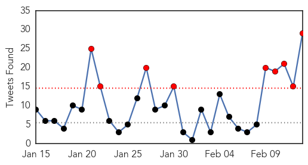
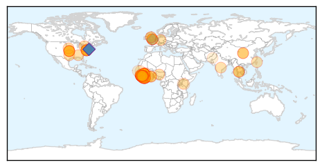
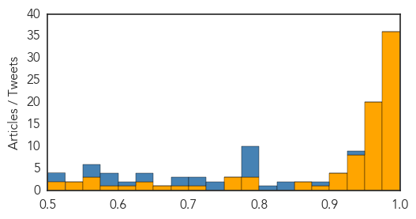
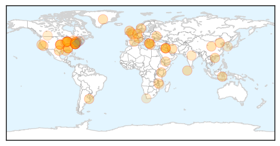

Ebola
30-Day Web Trend
0 alerts, 0 warnings

30-Day Twitter Trend
6 alerts, 0 warnings

Article Locations
Article Confidences
Top Articles:
- 1.000
- Ebola spending: will lack of a positive legacy turn dollars to dolour?
- 1.000
- U.S. intervention helps turn Ebola tide
- 1.000
- Etobicoke woman offering psychosocial support to Ebola victims, families in Sierra Leone
- 1.000
- Supporting Health Workers and Saving Lives in Ebola Outbreak - Sierra Leone
- 1.000
- FACT SHEET: Progress in Our Ebola Response at Home and Abroad - Liberia
- 1.000
- Final Ebola Virus Tests Negative
- 0.999
- Sierra Leone quarantines 700 homes in Aberdeen after Ebola case
- 0.999
- Pattaya News, Communities, Opinions and much more...
- 0.999
- Ebola: UN health agency turns to foreign medical teams in last phase of combat against virus
- 0.999
- Sierra Leone quarantines 700 homes after fatal Ebola case
- 0.999
- Ebola: UN health agency turns to foreign medical teams in last phase of combat against virus
- 0.999
- Human trial of 4th Ebola vaccine launches in Australia
- 0.999
- Red Cross Says Guinea Aid Workers Face Attacks
- 0.998
- Sierra Leone locks down 700 homes after Ebola death in blow to recovery efforts
- 0.998
- 1.3mn back in school in Ebola-hit Guinea: UNICEF
- 0.997
- 1.3m back in school in Ebola-hit Guinea
- 0.996
- US troops fighting Ebola to leave Liberia by end of April
- 0.996
- Sierra Leone quarantines 700 homes after Ebola case
- 0.995
- Local medical practitioner sends update from Sierra Leone Ebola clinics
- 0.992
- Water Relief Continues in West Africa -- BIRMINGHAM, Ala., Feb. 12, 2015 /PRNewswire/ --
- 0.992
- 56 Million US Dollars Needed to Provide Services in Ebola-affected Countries to Avoid Maternal Death Toll of Civil Wars Years - Sierra Leone
- 0.991
- No Ebola at LHSC: final test results negative
- 0.990
- Final Ebola Test Results at LHSC Come Back Negative
- 0.989
- Gambian government lifts travel ban on Ebola affected countries
- 0.988
- Early Ebola patient visits Dallas to share ‘God’s story’ of survival
- 0.988
- Library of Congress Scholar Explains Colonialism Link
- 0.987
- Novavax Commences Enrollment in Phase 1 Clinical Trial of Ebola GP Vaccine
- 0.985
- Ebola – the long road to recovery -- New Internationalist
- 0.983
- Guinea applauds Pres. Sirleaf
- 0.983
- UN, partners seek $2 billion to help millions of people across Africa's Sahel region
- 0.981
- Sierra Leone Says Ebola Aid Effort Hurt by Unaccountable Funds
- 0.980
- Here's Thrillist's guide to Baltimore's bars, and how to visit them in one go
- 0.980
- Episcopal Church looking at whether Cook lied during search process
- 0.979
- Sierra Leone quarantines 700 homes after Ebola case
- 0.978
- Sierra Leone locks down part of capital after spike in Ebola cases
- 0.976
- Ebola: World Bank will provide seeds to farmers in West Africa to ward off hunger
- 0.974
- As Ebola ebbs, Sierra Leone targets another kind of recovery: normalcy
- 0.973
- Guinean Bloggers Aren’t Satisfied With Government’s Handling of Ebola Epidemic · Global Voices
- 0.972
- Update Expected Friday on Latest Ebola Test Results at LHSC
- 0.970
- Guinea-Mali border surveillance stepped up in fight against Ebola - Mali
- 0.966
- Sierra Leone: 56 Million US Dollars Needed to Provide Services in Ebola-affected Countries to Avoid Maternal Death Toll of Civil Wars Years
- 0.964
- Ebola Virus Disease Outbreak News Update 2015
- 0.964
- Millions in Ebola funds unaccounted for in Sierra Leone
- 0.963
- Positive' results for Ebola drug upsets plans for trials
- 0.960
- Sierra Leone loses track of $3.3m in Ebola funds: auditor
- 0.958
- UNDP Chief arrives in Sierra Leone for a three-day visit
- 0.957
- Parents take children out of school in Guinea over Ebola fears
- 0.956
- Sierra Leone's Rescue Team: Ebola survivors supporting each other
- 0.955
- Ebola Survivors Could Pave the Way for Treatments
- 0.951
- Tripura orders probe into students falling ill
Showing top 50 articles...
Top Tweets:
- 0.984
- RT: Ebola Virus Still Infectious for a Week After Death: The Ebola virus may still be able to cause... http://t.co/2pdsuw30gr Eb…
- 0.979
- Sierra Leone locks down 700 homes after Ebola death - Yahoo News http://t.co/ujxj4dzWpn ebola EVD
- 0.978
- Inside Dallas' Ebola outbreak: People under surveillance had many personal ... - Dallas Morning News http://t.co/Ues3AMtxJD ebola EVD
- 0.970
- Sierra Leone quarantines 700 homes after Ebola case - Yahoo News http://t.co/xuVkihLzqK ebola EVD
- 0.970
- Ebola Crisis Eases in Africa. Now What? - Healthline http://t.co/WnSvRH9TVv ebola EVD
- 0.967
- Ebola Bodies Are Infectious a Week After Death, Study Shows - TIME http://t.co/KFuUKeRfjc ebola EVD
- 0.959
- Ebola Epidemic Should End in May, Say Disease Modelers - MIT Technology Review (blog) http://t.co/sndoXOGpwm ebola EVD
- 0.959
- Ebola Epidemic Should End in May, Say Disease Modelers - MIT Technology Review (blog) http://t.co/heokQqhpXV ebola EVD
- 0.959
- Ebola Epidemic Should End in May, Say Disease Modelers - MIT Technology Review (blog) http://t.co/VuGwQGOQtU ebola EVD
- 0.959
- Ebola Epidemic Should End in May, Say Disease Modelers - MIT Technology Review (blog) http://t.co/F49cQntsL0 ebola EVD
- 0.959
- Ebola Epidemic Should End in May, Say Disease Modelers - MIT Technology Review (blog) http://t.co/92Q9xrk34U ebola EVD
- 0.932
- RT: L'actualité du virus Ebola en temps réel, c'est ici >> http://t.co/p4t9ATu12r
- 0.927
- North Korea warns diplomats under Ebola quarantine: no more parties - Reuters http://t.co/hxvPvd79Bv ebola EVD
- 0.927
- N. Korea warns diplomats under Ebola quarantine: no more parties - Reuters http://t.co/dyjzteuiKs ebola EVD
- 0.927
- N. Korea warns diplomats under Ebola quarantine: no more parties - Reuters http://t.co/BAJJx7pFaB ebola EVD
- 0.905
- RT: Download the WHO's new Apple iOS free mobile app "Stop Ebola WHO" for important Ebola info and alerts ebola https://t.co/Wy…
- 0.894
- Postmortem Stability of Ebola Virus http://t.co/0WoJck0QcA
- 0.871
- Ebola Victims Still Infectious a Week After Death, Scientists Find - New York Times http://t.co/eFuUSPBYRe ebola EVD
- 0.860
- RT: Ebola doesn’t end with the last case. We're helping 2,000 children orphaned by Ebola in Liberia cope w/the crisis. http://t.co…
- 0.860
- RT: Are we coming to the end of Ebola? If so, what next? Ebola Sierra Leone EMERGENCY USA... http://t.co/OpBWfb82HV
- 0.843
- News pouch on avianflu avianinfluenza Ebola EbolaResponse MERS http://t.co/No5t6iQCT0
- 0.823
- RT: We are at 22,999 cumulative Ebola cases in the three most affected countries. @WHO Guinea SierraLeone Liberia http://t.co/…
- 0.812
- RT: Ebola Crisis Eases in Africa. Now What?: Every new case of Ebola that occurs — 221 in the past ... http://t.co/GkIt7it32X Eb…
- 0.747
- Stop detaining ebola workers when they return from non-ebola countries AFTER 21d period is over. Update your lists!
- 0.745
- This would have been an intimate day with my guy, but because of Ebola I'll miss it V- Day in Sierra Leone Ebola http://t.co/2RY31OUwng
- 0.739
- RT: " Ebola virus in the semen of convalescent men by - The Lancet Infectious Diseases http://t.co/HdPwErYBi1"
- 0.736
- Ebola Drug ZMapp's Ready for African Testing - http://t.co/FMQyohd10H http://t.co/1kB740vOX8 ebola EVD
- 0.725
- RT: Study:Viable ebola virus was isolated <7 days posteuthanasia; viral RNA was detectable for 10 weeks. https://t.co/z6pDPw1…
- 0.718
- Early Ebola patient visits Dallas to share 'God's story' of survival - Dallas Morning News http://t.co/QSjtTV2mVZ ebola EVD
- 0.688
- RT: Follow Liberia Country Director for updates on our Ebola response.
- 0.646
- SierraLeone to convert Ebola clinics into infectious disease treatment + research units. This & more Storify https://t.co/vz6LeWcMXo
- 0.644
- WATCH: Keeping Ebola out of Mali -> EbolaResponse continues https://t.co/MlD6BPeEC8
- 0.638
- Red Cross Faces Attacks at Ebola Victims' Funerals - New York Times http://t.co/7tnaApAOk1 ebola EVD
- 0.617
- RT: Group quarantine was successfully used to isolate five asymptomatic Ebola contacts in Nigeria. Ebola http://t.co/4Htu52AGY7
- 0.589
- someone contact me, we need PPE supplies proved for Ebola? @who
- 0.583
- Ebola Protection https://t.co/fdlojahJkC via
- 0.570
- Regional DiseaseSurveillance in a Globalized World ebola http://t.co/u1NNmjZ0Lf
- 0.563
- Wedding Dress Designer Helps With New Ebola Suit - ABC News http://t.co/cTUhsMd9q1 ebola EVD
- 0.559
- RT: As Ebola Virus Outbreak Slows, World Bank To Send $15M In Aid To Prevent Food Crises http://t.co/pq6zHosWKz http://t.co…
- 0.549
- RT: Ebola efforts shift from keeping up with new cases to eliminating the epidemic http://t.co/Rv9jvXbXoS
- 0.536
- RT: See how’s Fighting Ebola Grand Challenge is finding innovative tools to help tackle Ebola: http://t.co/CtB6jOBRxE
- 0.524
- Dear Dr.Hartl, by all Pandemic Stats calcs, especially with Ebola and being in Africa, the real number is surely over 30,000.
- 0.522
- Bob Simon's final story, on Ebola, will air Sunday - New York Daily News http://t.co/jyyrepdCVp ebola EVD
- 0.504
- RT: Our DART donated 2 ambulances to Margibi County Liberia to transport Ebola patients & boost future health services http://t.…
Unknown
30-Day Web Trend
0 alerts, 0 warnings

30-Day Twitter Trend
0 alerts, 0 warnings

Article Locations
Article Confidences

Top Articles:
- 0.991
- CDC: Nasty flu season has peaked, is retreating
- 0.988
- Flu deaths in Greece rise to 45, dozens in intensive care
- 0.987
- CDC: Nasty flu season has peaked, is retreating
- 0.941
- Fastest rise in scarlet fever cases for half a century
- 0.932
- ESU gastrointestinal outbreak apparently relenting
- 0.917
- Chicago Tribune
- 0.917
- Chicago Tribune
- 0.917
- Chicago Tribune
- 0.917
- Chicago Tribune
- 0.917
- Chicago Tribune
- 0.917
- Chicago Tribune
- 0.917
- Chicago Tribune
- 0.917
- Chicago Tribune
- 0.917
- Chicago Tribune
- 0.917
- Chicago Tribune
- 0.917
- Chicago Tribune
- 0.917
- Chicago Tribune
- 0.917
- Chicago Tribune
- 0.917
- Chicago Tribune
- 0.917
- Chicago Tribune
- 0.917
- Chicago Tribune
- 0.917
- Chicago Tribune
- 0.917
- Chicago Tribune
- 0.917
- Chicago Tribune
- 0.917
- Chicago Tribune
- 0.917
- Chicago Tribune
- 0.917
- Chicago Tribune
- 0.917
- Chicago Tribune
- 0.917
- Chicago Tribune
- 0.917
- Chicago Tribune
- 0.917
- Chicago Tribune
- 0.917
- Chicago Tribune
- 0.917
- Chicago Tribune
- 0.917
- Chicago Tribune
- 0.917
- Chicago Tribune
- 0.917
- Chicago Tribune
- 0.917
- Chicago Tribune
- 0.917
- Chicago Tribune
- 0.917
- Chicago Tribune
- 0.917
- Chicago Tribune
- 0.917
- Chicago Tribune
- 0.917
- Chicago Tribune
- 0.917
- Chicago Tribune
- 0.910
- The world windows to Thailand
- 0.902
- Quick facts about mad cow disease
- 0.872
- Five Flu Deaths in the County This Season
- 0.866
- (OFFICIAL)-USGS says there was no quake in western Russia
- 0.866
- Italy closes embassy in Yemen as security deteriorates
- 0.770
- Water test worry for MLAs
- 0.750
- UPDATE: Declining number of sick students at East Stroudsburg University
Showing top 50 articles...
Top Tweets:
- 0.684
- RT: Globally, WHO has been notified of 978 lab-confirmed cases of Middle East respiratory syndrome, incl at least 358 related deaths …
- 0.684
- RT: Globally, WHO has been notified of 978 lab-confirmed cases of Middle East respiratory syndrome, incl at least 358 related deaths …
- 0.585
- Imagínate, que hasta fue al hospital por tal de no hacerlo.
- 0.535
- KSA has reported 32 cases of MERS Already this month. 20 of them have been reported in the past 3 days. This is a staggering rate.
- 0.516
- RT: Sierra Leone announced it is launching a disease control and prevention agency, reports AFP http://t.co/Mzs8dNWC7S
- 0.502
- Un sistema público promocionando contenido de una religión en particular. http://t.co/UJIqEYQPEV